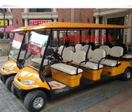

咨询热线
18166709251
18166709251
THE LATEST INFORMATION
| 资讯中心 |
林盛忠辉电动观光车管理规定
为使电动观光车、贵阳旅游观光车使用合理、安全、规范，切实加强车辆及驾驶人员的管理，提高车辆使用效率，特制订本制度。
第一条、车辆管理
1、林盛忠辉观光车指定专人负责卫生清洁、基本维护、故障报修等工作；管理人在每次使用车辆前后，应按照安全检查规程对车辆做基本检查，如发现配件故障或
车辆损坏等现象，应立即上报。
2、驾驶人员每次用车完毕，需按指定位置整齐停放车辆。
3、任何人不得擅自将电动观光车开出指定的区域，管理人不得将车辆借给他人驾驶，违者按私自使用公司公务车辆处罚。
4、车辆运行日记制度。驾驶人员对每次车辆使用情况进行登记，内容包括使用时间、车况简述、维护保养记录、故障报修记录等。
5、备用钥匙登记制度。备用钥匙统一由车辆管理人保管，每次使用需进行登记，并需本人归还时记录。
第二条、卫生管理
1、车辆应定期清洗，全车清洁、无破损、无灰尘、无水印。车辆使用前应再次检查车辆卫生，保证使用时的卫生状况。
第三条、充电管理
车辆应定期进行充电，确保使用时有充足的电量。
第三条、车辆保养
林盛忠辉观光车车辆负责人负责所驾车辆的日常维护保养。内容包括：检查车辆轮胎、刹车系统、方向盘、电瓶、照明灯、倒车镜、雨刮器、电机、继电器、喇叭、黄油、齿轮、油漆、电门、车棚、电瓶连接线等是否符合工作要求；检查车辆轮胎气压是否符合标准，轮胎螺丝是否坚固；启动车辆时，察听发动机声音是否正常。
第四条、
定期预防性维护保养。内容包括：每周补充刹车油、电瓶液；每月调整车辆的方向盘、灯光、刹车等；按时填写《车辆保养登记卡》，注明车辆检查保养情况。
第五条、
维护保养记录。驾驶员负责对车辆日常维护保养进行记录，故障维修人员负责检查日常维护保养情况并对各项记录进行汇总。
第十二条
其他设备维护制度。
（一）设备维护保养：维修责任人每周应检查该设备运行情况，做到早发现，早报修，早解决；监督设备生产厂家的每年检查及维护工作，发现问题及时与林盛忠辉观光车厂家联系，并一同解决设备修理问题。
（一）前期准备。
1、卫生准备：任务前一小时内，驾驶员清洁自己驾驶的车辆，除做到日常卫生的标准外，必须重点检查各个卫生死角，并反复清洁客人可触摸到的任务车辆部位；
2、安全检查：任务前进行林盛忠辉观光车车辆零部件检查，确保制动，动力，灯光等有关安全的部分无故障；检查沿途路线安全，确保通畅无误；
3、特殊天气检查：遇到雨雪，大雾等可能导致路面发生安全隐患的天气时，要及时检查任务路线，确保通畅安全，并检查雨帘等特殊天气需用物品，备好干抹布，随时擦干座套上的水迹，保持座套干洁；
4、仪态检查：驾驶员要身穿工作服，保持整洁，随身携带对讲机。
客人上车时应予以引导，应做到“请字开头，谢不离口”；有必要帮助的需立即给予帮助，等客人上齐后驾驶员方可上车；
5、任务接待期间，除有公司领导陪同，或客服人员陪同的车辆驾驶员不需主动讲解；
6、任务接待路程中，平均最高速度不超过10公里/小时，明显地形改变的需减速慢行，途中注意保持车间距，不得急刹，不得突然加速；
第十五条
重大接待任务流程
（一）提前一天完成所需车辆的卫生，反复清洁，直至完全达到卫生清洁标准；
（二）重大任务前一天，所有车辆均需检查维修记录，并由维修负责人当场试车，确保车辆安全；将任务车辆充电，确保所有任务车辆电量；任务当日，仔细检查车内设施，确保无人为破坏，无危险物品，无安全隐患；任务前二小时，仔细检查车辆将经过的路线，确保线路畅通，及时发现安全隐患，及时上报；
（三）重大任务前一天，与任务负责人确认所有备品清单；
（四）与重大任务负责人联系，确认路线，时间，地点及车辆所需备用品；
（五）重大任务前必须着装对讲机，准备齐全；重大任务到达之后，所有人对讲机开启，保证通讯流畅；
（六）重大任务接待路程中，平均最高速度不超过 15公里/小时，遇转弯，上下坡等明显地形改变的需减速慢行，途中注意保持车间距，不得急刹，不得突然加速；
（七）重大任务接待中，客人坐稳才能启动车辆；根据现场情况和任务负责人安排，如前几辆领导车载领导坐好后便可启动；当车辆缓步停稳时方可让客人下车；前面车辆在下车过程中，第二排车辆超车时要减速注意观察；
第七章 安全制度。
林盛忠辉观光车驾驶员应遵循以下安全指引:
（一）出车前，要认真检查车辆技术和性能状况；
（二）在来回道路行驶时，应靠右行驶，严格控制驾驶速度，行驶速度不得超过15公里/小时；每车载客量不得超过（按电瓶车载客量定）人；
（四）在确认乘客全部坐稳的情况下方可开动林盛忠辉观光车，行车过程中注意观察内视镜；
（六）行车过程中，驾驶员严禁超速行驶、严禁使用电话；
（七）充电设备要注意防雨，并明确标识，严防客人触电事故发生；
（八）严格执行“宁停三分钟，不抢一秒钟”的行车原则，确保行车安全。
